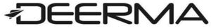

Trade Mark Journal No.2025/031 1 August 2025
WO0000001852152 (7,9,10,11,21,28,35)
Office of origin: China
Date of International Registration:30 December 2024
Date of designation in the UK:
30 December 2024

- Class 7
- Kneading machines; scissors, electric; vacuum cleaners for industrial purposes; disintegrators; vacuum cleaner attachments for disseminating perfumes and disinfectants; washing apparatus; mills for household purposes, other than hand-operated; shoe polishers, electric; suction cups for milking machines; vacuum cleaners for household purposes; battery operated machines; bottle washing machines; spin dryers [not heated]; packaging machines for food; cleaning appliances utilizing steam; kitchen machines, electric; knives, electric; machines and apparatus for cleaning, electric; juice extractors, electric; mixing machines; whisks, electric, for household purposes; handling machines, automatic [manipulators]; dust removing installations for cleaning purposes; steam condensers [parts of machines]; curtain drawing devices, electrically operated; rotary steam presses, portable, for fabrics; hand-held tools, other than hand-operated; dishwashers; steam mops; nail extractors, electric; milking machines; spraying machines; machines and apparatus for carpet shampooing, electric; machines and apparatus for wax-polishing, electric; labellers [machines]; washing machines [laundry]; spinning machines; blenders, electric, for household purposes; woodworking machines; machines and apparatus for polishing [electric]; washing installations for vehicles; beaters, electric; compressed air machines; waste disposal units; printing presses; wringing machines for laundry; wrapping machines; shearing machines for animals; beverage preparation machines, electromechanical; apparatus for aerating beverages; industrial robots; grain husking machines; bread cutting machines; food preparation machines, electromechanical; food processors, electric; ironing machines.
- Class 9
- Pedometers; remote control apparatus; cinematographic cameras; stereoscopes; planimeters; integrated circuits; projection screens; cameras [photography]; battery charging equipment; measures; 3D spectacles; weighing apparatus and instruments; hygrometers; USB chargers; smartphones; computer software applications, downloadable; electrified fences; computer programs, downloadable; heat regulating apparatus; facial recognition apparatus; scales; time recording apparatus; electrolysis apparatus for laboratory use; scales with body mass analysers; materials for electricity mains [wires, cables]; air analysis apparatus; accumulators, electric; electronic agendas; data synchronization cables; electronic collars to train animals; thermometers, not for medical purposes; temperature indicators; electronic notice boards; bathroom scales; electronic animal identification apparatus; portable media players; animated cartoons; fire extinguishing apparatus; baby scales.
- Class 10
- Thermometers for medical purposes; gloves for massage; ultraviolet ray lamps for medical purposes; electric acupuncture instruments; medical masks; masks for use by medical personnel; soporific pillows for insomnia; body fat monitors; abdominal corsets; esthetic massage apparatus; surgical apparatus and instruments; dental apparatus and instruments; moxibustion apparatus; physiotherapy apparatus; orthopedic articles; medical apparatus for facilitating the inhalation of pharmaceutical preparations; electric massage apparatus for household use; massage apparatus; anti-rheumatism bracelets; abdominal belts; nasal aspirators.
- Class 11
- Ultraviolet ray lamps, not for medical purposes; heating apparatus, electric; rotisseries; heating installations; electric appliances for making yogurt; coffee roasters; electric water boilers; humidifiers; toilet seats; footwarmers, electric or non-electric; fabric steamers; water heater for washing (gas or electric heating); cooking apparatus and installations; disinfectant apparatus; coffee machines, electric; air deodorizing apparatus; microwave ovens [cooking apparatus]; air filtering installations; hand drying apparatus for washrooms; kettles, electric; cooking utensils, electric; drying apparatus; germicidal lamps for purifying air; water purifying apparatus and machines; wash-hand basins [parts of sanitary installations]; heating and cooling apparatus for dispensing hot and cold beverages; showers; deep fryers, electric; radiators, electric; cooking stoves; hair dryers; portable evaporative cooling fans; hydromassage bath apparatus; sanitary apparatus and installations; ice-cream making machines; bakers' ovens; electrically heated carpets; pocket warmers; lamps; laundry dryers, electric; multicookers; electric fans for personal use; roasting apparatus; cooling appliances and installations; air humidifying apparatus; bath tubs; outdoor electric grills; toilet bowls; soya milk making machines, electric; air sterilizers; fountains; bread-making machines; freezers; extractor hoods for kitchens; ice machines and apparatus; USB-powered cup heaters; electric egg boilers; heaters, electric, for feeding bottles; USB-powered hand warmers; nail lamps; air fryers; steam facial apparatus [saunas]; bath tubs for sitz baths; food steamers, electric; fans [air-conditioning]; dehumidifiers for household use; taps; steam generating installations; air-conditioning installations.
- Class 21
- Reusable plastic water bottles sold empty; basins [receptacles]; fruit presses, non-electric, for household purposes; bottle openers, electric and non-electric; cooking pots, non-electric; sippy cups; cutting boards for the kitchen; place mats, not of paper or textile; blenders, non-electric, for household purposes; kitchen grinders, non-electric; containers for household or kitchen use; kitchen utensils; lunch boxes; ceramics for household purposes; drinking vessels; tea infusers; deodorizing apparatus for personal use; watering devices; drying racks for laundry; inflatable bath tubs for babies; smoke absorbers for household purposes; soap boxes; ironing boards; buckets made of woven fabrics; mop wringer buckets; garbage cans for household purposes; baby baths, portable; stands for portable baby baths; toilet paper holders; brushes for cleaning tanks and containers; combs; electric combs; nail brushes; toilet brushes; bath brushes; washing brushes; toothbrushes; toothbrushes, electric; water apparatus for cleaning teeth and gums; heads for electric toothbrushes; toothpick holders; toothpicks; toilet cases; cosmetic utensils; reusable ice cubes; thermally insulated containers for food; isothermic bags; tea cosies; insulating flasks; ice buckets; squeegees [cleaning instruments]; brooms; lint removers, electric or non-electric; cleaning instruments, hand-operated; carpet sweepers; mops; crystal [glassware]; animal activated animal feeders; pet feeding bowls; automatic litter boxes for pets; plug-in diffusers for mosquito repellents; insect traps; electric devices for attracting and killing insects.
- Class 28
- Body rehabilitation apparatus; apparatus for games; hoops for exercise incorporating measuring sensors; shin guards [sports articles]; balls for games; waist trimmer exercise belts; machines for physical exercises; elliptical exercise machines; stationary exercise bicycles; toys; appliances for gymnastics; running machines; belts [sport articles]; archery implements; playing cards; body-building apparatus; body-training apparatus.
- Class 35
- Personnel management consultancy; commercial administration of the licensing of the goods and services of others; sponsorship search; presentation of goods on communication media, for retail purposes; business management and organization consultancy; import-export agency services; advertising; organization of exhibitions for commercial or advertising purposes; retail or wholesale services for medical supplies; procurement services for others [purchasing goods and services for other businesses]; marketing; sales promotion for others.
Guangdong Deerma Technology Co., Ltd.
Representative: Beyond Attorneys at Law, Rm. 606, F6, Xijin Centre,, 39 Lianhuachi East Rd.,, Haidian District, 100036 Beijing, CHINA